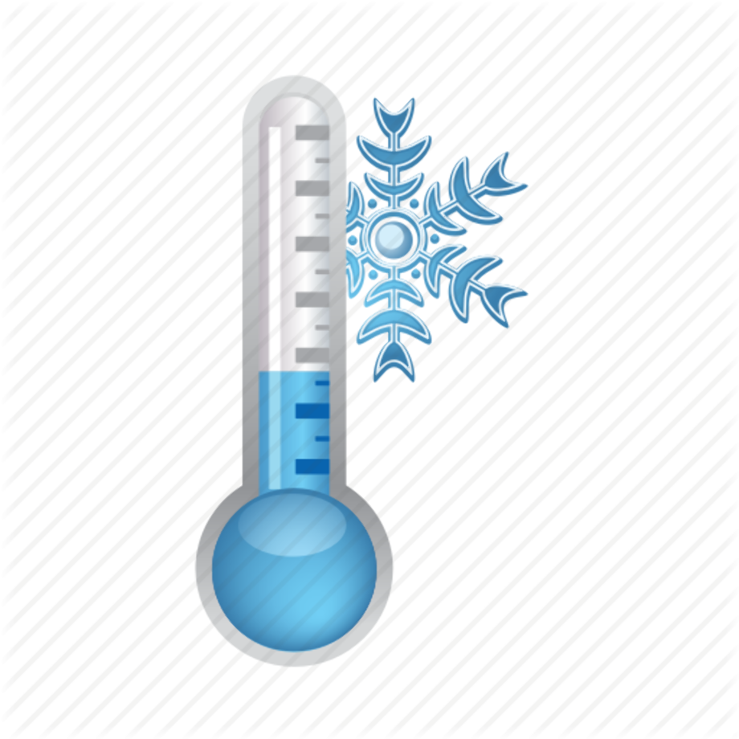

<main class="container">
  <section class="section1">
     15">
     14">
    <article class="weatherData">
      <div class="location">BR</div>
      <div class="temp">{{14.40 | number: '1.0-0'}} &deg;C</div>
    </article>
  </section>
  <section class="section2">
    <div class="moreInfo">
      <p>More Information</p>
    </div>
    <div class="moreInfoContainer">
      <div class="infoBlock">
        <div class="infoBlockLabel">
          
          <span>min</span>
        </div>
        <div class="infoBlockValue">
          10&deg;C
        </div>
      </div>
    </div>
  </section>
</main>
<router-outlet></router-outlet>
